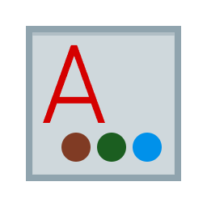

Markdown2Word 是鲸鱼AI助手推出的一款强大的 Markdown 转换工具，完美支持 Markdown 转 Word、PDF 和 Excel。特别针对 DeepSeek、豆包 等生成的内容优化，完美还原 LaTeX 公式与代码高亮。
不仅是简单的格式转换，更是对 Markdown 文档质量的完美还原。

将 .md 文件完美转换为可编辑的 Word 文档，保留标题层级、字体样式和列表缩进，无需二次排版。
高清 PDF 导出，支持自定义页边距，生成的 PDF 文档适合打印和正式分享，格式分毫不差。
自动识别 LaTeX 数学公式并转换为 Word 原生公式对象或 PDF 矢量图，告别图片乱码。
专为 DeepSeek、豆包、千问 等 AI 生成的大量 Markdown 内容优化，支持批量转换。
无论您是在网页端、桌面端还是手机端，都能流畅使用 Markdown2Word。
| 功能/平台 | 在线网页版 | 浏览器插件 | 桌面客户端 | API 接口 |
|---|---|---|---|---|
| Markdown 转 Word | ✓ 支持 | ✓ 支持 | ✓ 支持 | ✓ 支持 |
| Markdown 转 PDF | ✓ 支持 | ✓ 支持 | ✓ 支持 | ✓ 支持 |
| 批量转换 | 即将上线 | ✓ 支持 | ✓ 支持 | ✓ 支持 |
| LaTeX 公式 | ✓ 完美支持 | ✓ 完美支持 | ✓ 完美支持 | ✓ 完美支持 |
只需简单的三步，即可完成 Markdown 到 Word 的转换。
复制您的 Markdown 内容，或者准备好需要转换的 .md 文件。支持从任何编辑器或 AI 对话框中复制。
打开 Markdown2Word 在线工具，将内容粘贴到输入框，或者直接点击上传文件图标。
选择您需要的输出格式（Word/PDF/Excel），点击转换按钮，几秒钟后即可下载。
关于 Markdown 转换、格式兼容及隐私安全的详细说明
使用 Markdown2Word 进行转换非常简单。首先，将您的 Markdown 内容复制到剪贴板，或者准备好 .md 文件。然后，打开我们的在线转换工具，粘贴文本或上传文件，选择输出格式为 Word (.docx)，点击“开始转换”即可。整个过程免费且无需安装任何软件。
这是我们核心优势之一。Markdown2Word 完美支持 LaTeX 数学公式转换。我们会将 LaTeX 语法（如 $E=mc^2$）智能解析并转换为 Word 原生的 OMML 公式对象，这意味着转换后的公式在 Word 中是可以直接编辑的，绝不会出现图片乱码或模糊的问题。
这种情况通常是因为源 Markdown 的表格语法不够标准。Markdown2Word 内置了“智能表格修复”算法，能自动对齐列宽。如果仍有问题，请确保源文本中使用标准的 `|` 分隔符，或者尝试使用我们的“Markdown 转 Excel”功能，提取表格数据后再粘贴回 Word。
支持。Markdown2Word 是一款全能的转换工具。您可以将 Markdown 导出为高清 PDF 文档（适合打印和归档），也可以将其中的表格数据提取并导出为 Excel (.xlsx) 文件。在插件和桌面版中，您甚至可以一键同时导出这三种格式。
网页版目前支持单文件转换。如果您需要批量处理大量 Markdown 文件（例如将整个电子书项目转换），建议下载我们的桌面客户端或安装浏览器插件。这些版本支持文件夹拖拽批量转换，能极大提高您的工作效率。
完全可以。Markdown2Word 是基于 Web 开发的，完美适配移动端浏览器。无论您使用的是 iPhone、Android 手机还是 iPad，只需在浏览器中访问我们的网站，即可随时随地完成 Markdown 到 Word 的转换，无需下载 App。
会保留。我们针对程序员的使用场景做了特别优化。Markdown 中的代码块在转换为 Word 后，会保留背景色和字体颜色高亮，并且在 Word 中仍然可以正常编辑代码内容，不会变成纯黑文字。
对于本地图片链接，我们会自动嵌入到 Word 文档中。对于 Mermaid 流程图语法，我们的引擎会将其渲染为高清矢量图并插入文档，您无需担心图表丢失或模糊。请注意，网络图片需要确保可访问性。
我们非常重视用户隐私。您的文件仅在服务器内存中进行瞬时处理，转换完成后会立即从服务器端删除，我们不会保留、查看或分享您的任何文档数据。对于极度敏感的文档，建议使用我们的离线桌面客户端进行本地转换。